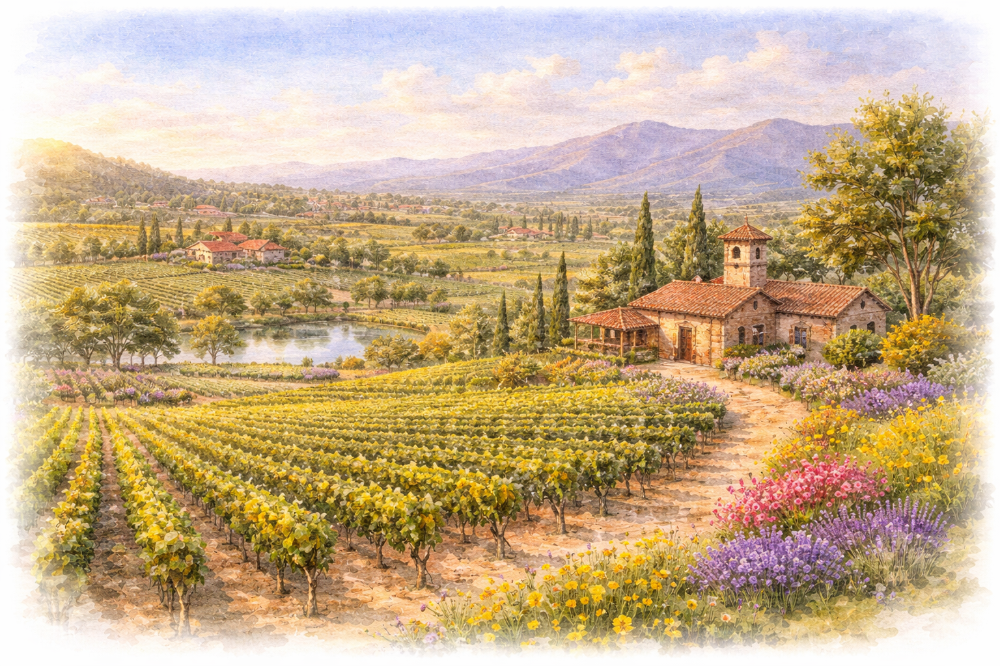

Solunto Restaurant & Bakery
A Little Italy classic for wood-fired pizza, house-made pasta, and pastries when you want a lively dinner in one of San Diego's most walkable neighborhoods.
Visit WebsiteIf you are making a full San Diego weekend of it, here are the restaurants, day trips, and outdoor stops we would send you to first.

A Little Italy classic for wood-fired pizza, house-made pasta, and pastries when you want a lively dinner in one of San Diego's most walkable neighborhoods.
Visit WebsiteOne of the city's most beloved sushi counters, especially worth it if you want a standout omakase-style meal during the weekend.
Open MapCasual, generous Mexican comfort food that makes an easy stop when you want something unfussy and deeply satisfying.
Visit WebsiteGo early for naturally fermented bread and beautiful pastries in Bird Rock before the line gets too ambitious.
Visit WebsiteA theatrical cocktail stop hidden behind a bottle shop, ideal if you want one dramatic nightcap in a space that feels very San Diego.
Visit WebsiteBright Vietnamese dishes, comforting broths, and a polished casual feel make this an easy lunch or dinner recommendation near UTC.
Visit WebsiteFast, fresh poke bowls when you want something casual between activities without sacrificing the San Diego seafood mood.
Visit WebsiteBold regional Chinese flavors and comforting noodle and stir-fry dishes make this a strong pick when the group wants something warm and shareable.
Visit WebsiteA dessert stop for shaved ice, grass jelly, and taro-forward treats when you want something sweet in Convoy after dinner.
Open MapA dockside museum that is easy to fit into a day downtown, with flight deck views, exhibits, and enough scale to feel memorable.
Visit WebsiteGood for a casual wander through early California history, with plazas, preserved buildings, shops, and live music energy.
Visit WebsiteMuseums, gardens, architecture, and open space all in one place, making it an easy half-day if you want variety without much planning.
Visit WebsiteA classic Coronado stop for beach views, a historic walk through the property, and an easy excuse to linger by the water.
Visit WebsiteOne of the simplest ways to enjoy the coast: bring snacks, sit above the water, and watch surfers and sunset from Bird Rock.
Plan a VisitA quieter, greener option in Encinitas with winding paths, ocean air, and enough room to spend an unhurried afternoon.
Visit WebsiteThe classic first stop for ocean air, bright water, and an easy coastal stroll that still feels iconic even on a short visit.
Open MapA beautiful bluffside walk with long Pacific views that feels especially good in the morning or just before sunset.
Trail DetailsA short coastal loop with wide-open views and spring wildflowers, ideal when you want a scenic walk without committing to a long hike.
Open MapA more playful trail choice with narrow sandstone walls and a climb that feels slightly adventurous without requiring a full-day outing.
Open MapA calmer trail network for birding, marsh views, and an easy nature reset if you want something greener and less crowded.
Visit WebsiteWorth the drive for panoramic harbor views, tidepools, and a windswept Point Loma perspective that feels distinct from La Jolla.
Visit Website